- Care coordination
- EHR workflow
- Cross-functional alignment
Improving the care for hospitalized patients
Replaced a copy-paste spreadsheet with a real-time admissions dashboard built into the chart.
- Client
- One Medical
- Delivered
- Journeys, wireframes, prototypes, shipped features, data model
The problem
When a patient is admitted to a hospital or other care facility, they are often at their most vulnerable and care is often at its most expensive.
One Medical's high-risk patients — especially seniors — do get hospitalized, and the 7–10 days after discharge are when readmission risk peaks. Readmissions are bad for patients and expensive for the business.
Despite that, the team was managing this high-stakes work with manual tools. Health Navigators tracked admissions in a spreadsheet, copying and pasting data out of the chart. Every handoff was a chance for miscommunication, mistakes, and worse outcomes.
Key terms
-
Admission
Significant care at an outside facility for a serious health event: ED visit, outpatient surgery, skilled nursing facility.
-
ADT
Admission, Discharge, Transfer: the three state changes facilities report through interop channels. One Medical used Bamboo Health, CMT, and other sources.
-
Health Navigator
A non-clinician care team member supporting a panel of value-based patients, especially when they're outside the One Medical ecosystem.
Vision
- 01
Provide high-value, timely care to our most vulnerable patients.
- 02
Enable care teams and offices to coordinate daily activities around the needs of these high-risk patients.
User goal
Improve how we manage and engage hospitalized patients, so care teams give high-need patients the right level of attention and avoid costly readmissions.
Business goal
Enable Health Navigators and other care team members to give admitted patients attentive care that improves outcomes and reduces costs.
Measures
Reduce manual effort; decrease time spent navigating the chart looking for information. Tracked through time on task, task completion, and the share of admissions that are readmissions within 30 days of discharge.
Why this was hard
The obvious answer — "just move the spreadsheet into the chart" — didn't work. Shipping this meant going through multiple teams: Charting, Ordering (Amazon Pharmacy), Care Insights, Scheduling, Billing, and Workflow.
The chart ran on a monolithic stack; practice management tools were a separate microservices app, sometimes owned by entirely different teams. The board had to pull from a shared service and update in real time across both.
Starting requirements
- Users can create, edit, and update an admission's details.
- Users (primarily Health Navigators) can view pre-admit, active, and discharged stays at inpatient facilities.
- Users can filter and modify views to focus on admissions relevant to their team.
- Analytics can assess admission frequency, duration, and resolution, cut by region and patient cohort — important for value-based care reimbursement.
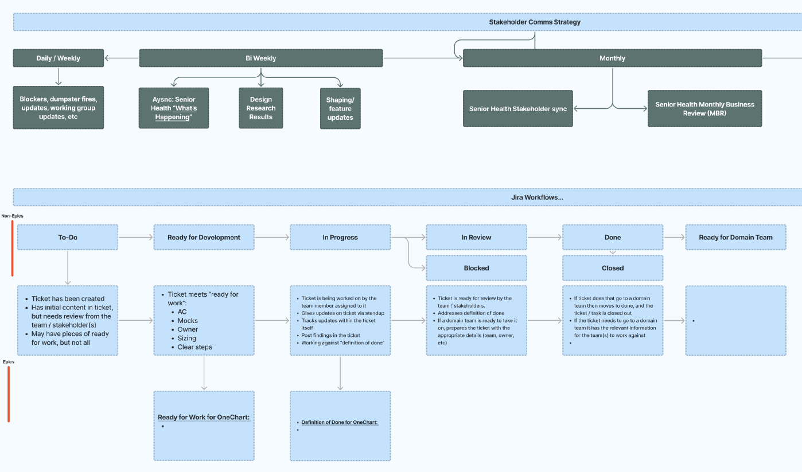
Research and alignment
Under time pressure, I ran a rapid ideation phase with workshops to align cross-functional teams on core priorities, then scoped an MVP that cut manual work immediately while leaving room to scale.
- Stakeholder alignment & vision workshop with PMs, engineers, and clinical leads across Senior Health, Clinical Ops, and Clinical Tech leadership. Captured each team's needs and pain points, and documented decisions in a DACI framework.
- Research with a UX researcher: surveys, interviews, observational studies with Health Navigators, and data analysis.
- Synthesis into JTBD, journey maps, and prioritized user stories with stakeholder sign-off.
What we learned
The highest-value need was giving office managers a practice-wide view of patient care against service standards — next steps and actions at a glance, available in the patient chart. Research also surfaced multiple roles and handoffs that varied with patient complexity, and a recurring need to clarify ownership: who is responsible for doing what.
"Office managers need to see how we're doing as a practice."
"The service standards are clearly outlined and I know if they are being met."
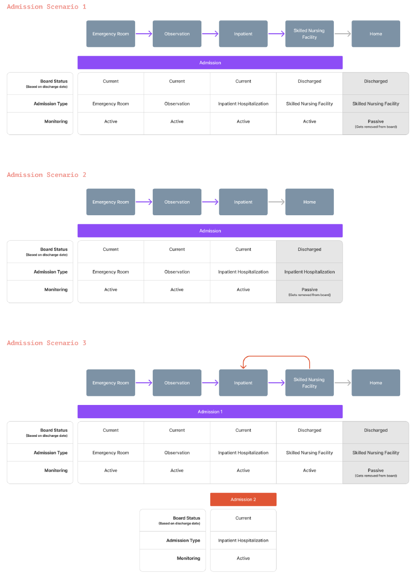
Admission scenarios
How a stay moves between facilities, and when it leaves the board.
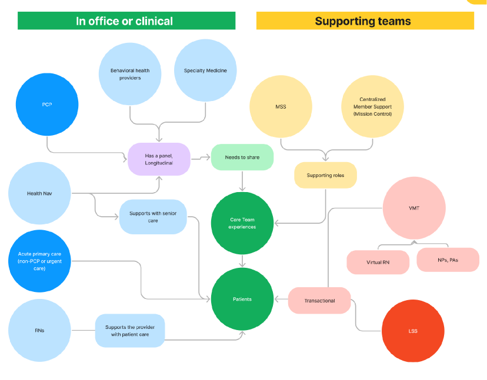
Roles and handoffs
In-office and clinical roles against the supporting teams around each patient.
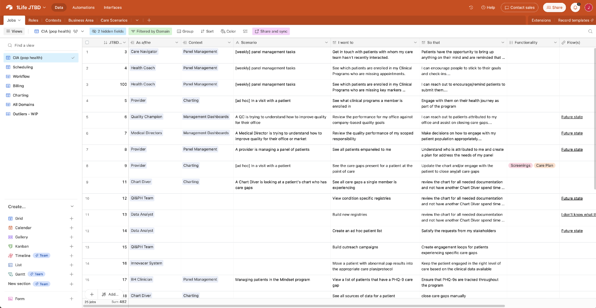
Jobs to be done
As a care navigator doing weekly panel management, I want to get in touch with patients my care team hasn't recently interacted with, so that patients receive necessary follow-up care.
Core jobs
- 01
Note a patient's admission status.
- 02
Let care teams and offices coordinate daily activities.
- 03
Maintain visibility and accountability while reducing risk.
Clarify ownership — who is responsible for doing what
Exploring the options
I explored several directions in flows and wireframes before narrowing to two decisions: where the board lives, and what goes in the expanded row.
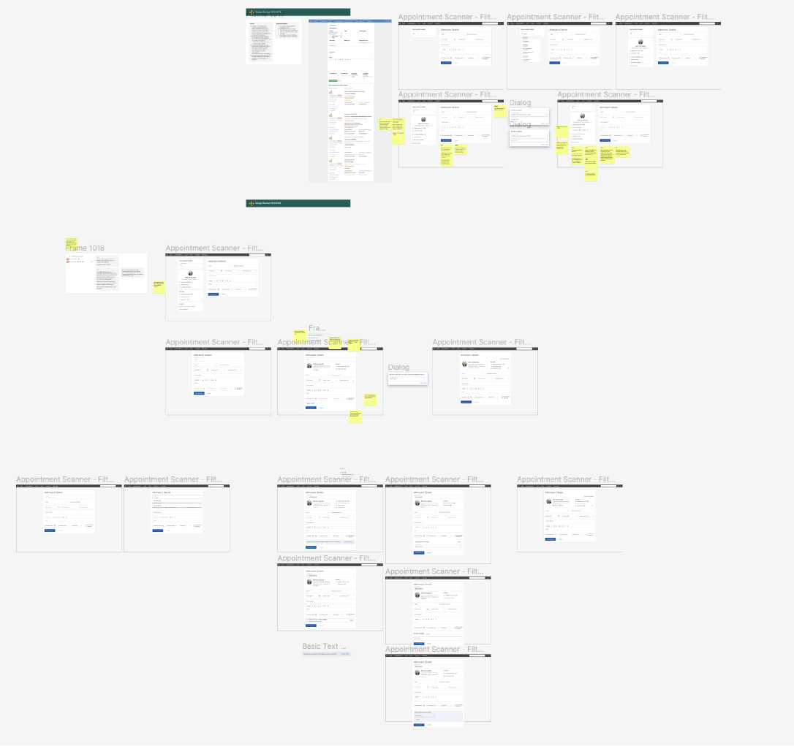
Decision 1 — Where does it live?
User and stakeholder feedback made it clear the standalone board served more roles and scaled better, while staying connected to the chart.
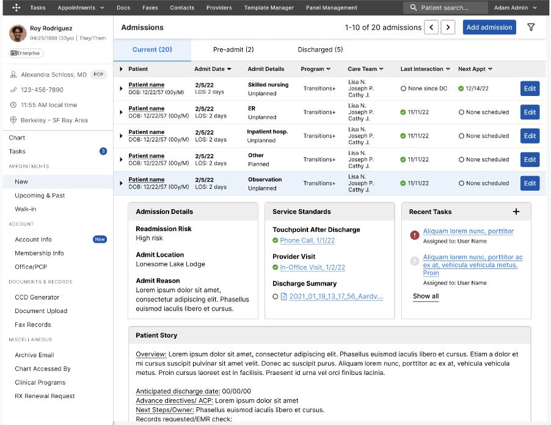
A — Integrated into Panel Management
PCPs already used it; one familiar place; lower learning curve. But it was optimized for individual patients, not clinic-wide views, and couldn't flex to navigator and office manager workflows.

B — Standalone dashboard · Chosen
Built for Health Navigators and office managers who need practice-wide visibility. Room for admissions-specific features like automated ADT streams, and less cognitive load for PCPs.
Decision 2 — What goes in the expanded row?
Office managers were emphatic that clear next steps were what made coordination work. Option 2 balanced completeness with actionability.
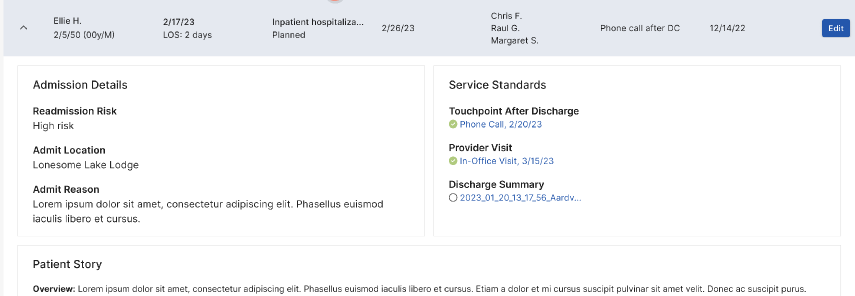
1 — Two columns
Clean, core info only. No place for next steps — the thing users kept asking for.
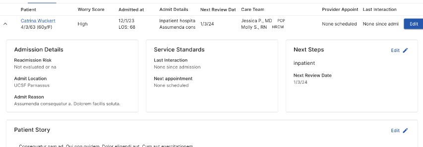
2 — Three columns + Next Steps · Chosen
Actionable items right beside status; serves navigators and office managers. Slightly more visual complexity.
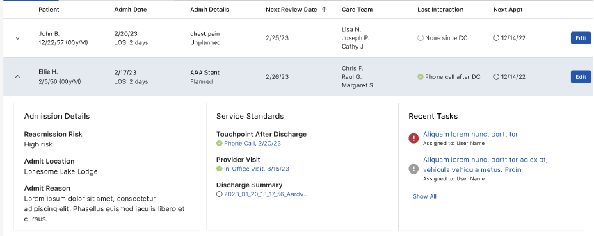
3 — Three columns + Recent Tasks
Useful history context, but it buried next steps, and recent tasks were already available elsewhere.
The solution
After several iterations I delivered high-fidelity designs for an interface that lets care teams and offices coordinate daily around their highest-risk patients. The UI met strict accessibility standards, with typography and layout tuned so information stays digestible during high-stress coordination.
01
Eliminated spreadsheet dependency
Health Navigators view and update admissions directly in the EHR. Filters preserve the sort/filter/organize power they relied on in the spreadsheet.
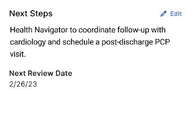
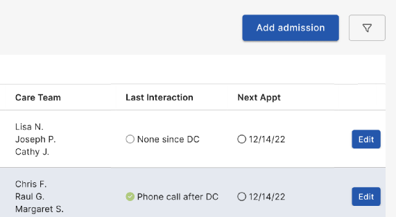
02
Clarified ownership
Care team and next steps are explicit on every admission.
03
Improved workflow and visibility
Views by status (pre-admit, active, discharged); service standards visible at a glance; no more hunting the chart for a discharge summary.
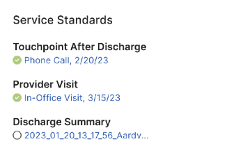
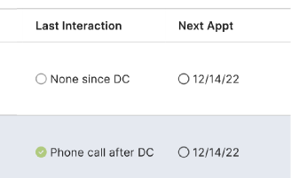
04
Reduced time-to-action
Admissions tracking consolidated in the EHR for Health Navigators, PCPs, and office managers, including an admission panel in the patient chart.
05
Data-driven decisions
Worked with Analytics to expose admissions data in Snowflake for frequency, duration, and reimbursement reporting.
Results
-
Increased efficiency
Less manual data entry and navigation by bringing admissions data into the EHR.
-
Improved patient outcomes
Better discharge planning and follow-up supported lower readmission rates.
-
User satisfaction
Health Navigators and clinical staff reported the new system was more reliable and easier to use.
-
Foundation for automation
Structured fields ready for ADT integration from sources like Bamboo Health.
Role
What changed
Health Navigators
Could follow up better
PCPs
Could give better care at the point of care
Office managers
Could confirm service standards were met in their clinics
Learnings and what's next
- User-centered iteration mattered. Early workshops and testing revealed the multi-role need and led to a standalone experience connected to the chart.
- Cross-functional communication. Regular updates minimized scope changes and kept departments aligned.
- Build for scale. I partnered with engineering so the MVP could absorb ADT feeds and reporting later.
What I'd change: bring automated data feeds in earlier; the MVP's impact would have been larger.
What's next
From a board you update to a board that updates itself
The admissions board replaced a spreadsheet that seven teams had to keep current by hand. It gave everyone one place to see who was in the hospital, who owned them, and what had to happen before they went home. But the way people used it didn't change much. Someone still had to notice an admission, type it in, chase the discharge summary, and write the next step.
So I kept going. I wanted to know what the board would look like if the busywork went away, and the care team spent their time on decisions instead of data entry.
Most of the updates already exist somewhere else
When I went back through the research, most of the updates people typed into the board were already sitting in another system. Hospitals send admission and transfer updates through ADT feeds. Discharge summaries show up as faxes. Nurses log calls. The board didn't need people to be the glue between those systems. It needed to listen to them.
That changed the core idea. The board stops being a list of patients and becomes a list of decisions.
A queue of work that's ready to approve
Every morning the copilot shows what changed overnight and what it has already prepared:
- Admissions and transfers from ADT feeds move patients between the ER, observation, inpatient and skilled nursing stages on their own.
- Discharge summaries get read when the fax lands. Medication changes that don't match the chart are flagged for a nurse.
- Follow-ups are drafted to meet the service standards: a visit booked inside the 7-day window, or a text to a caregiver in their preferred language at the time they actually answer.
- Next steps get rewritten from a teammate's call note, so the board never shows yesterday's plan.
Each card explains why it's there and links to the source: the fax line, the call note, the feed event. You approve in one click, edit the draft, or dismiss it. Everything can be undone, and every action goes into an activity log.
Autonomy is a setting, not a leap of faith
The part I'm most excited about is letting teams decide how much the AI does, one kind of work at a time. Each type can be set to Suggest (it recommends, you act), Draft (it prepares everything, you approve), or Auto (it acts and tells you). A team might put records requests on Auto in week one and keep scheduling on Draft until they trust it. Clinical escalations and medication changes are locked. A person always decides those.
This matters because trust in a clinical setting gets earned one task at a time. A single on/off switch forces an all-or-nothing call nobody is ready to make.
Closing the loop after discharge
The biggest opportunity wasn't in the hospital. It was the first week at home, when most readmissions start. In the concept, the copilot makes an automated check-in call around day seven. If a patient mentions new swelling or weight gain, it escalates to a nurse the same day and shows the exact words the patient used.
How I'd validate it
This is a concept, not something we shipped. Here's how I'd test it:
- Shadow mode first. Run the copilot next to the current board for two weeks and compare what it drafts with what the team actually did.
- Start with the lowest-risk work. Pilot Auto on records requests and ADT status updates only, then track how often people undo those actions.
- Measure what the board was built for. Reviews completed on time, the share of patients who meet all three service standards, and time from discharge to first touchpoint.
If those numbers move and the undo rate stays low, we expand. If they don't, the queue still gives us a clear record of where the AI and the care team disagree. That's the next round of research.
All patient data shown is fictionalized for demonstration.
Back to work